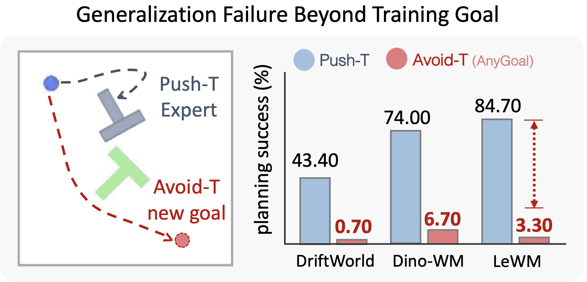
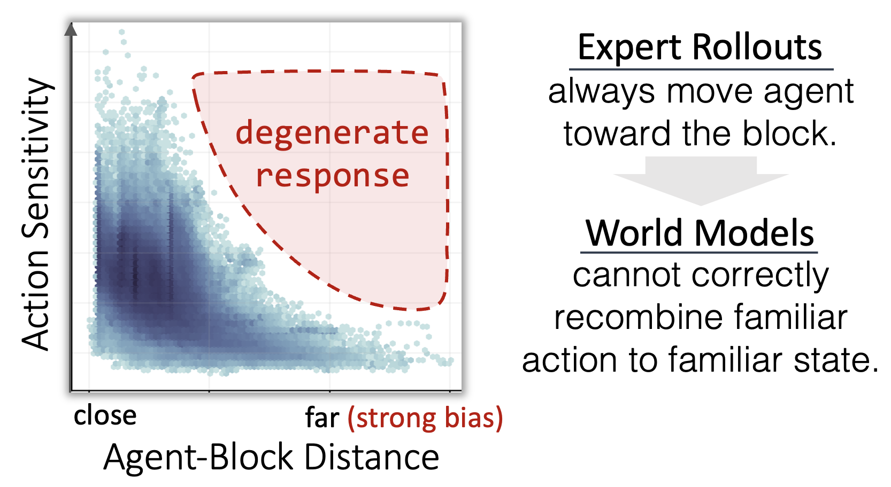
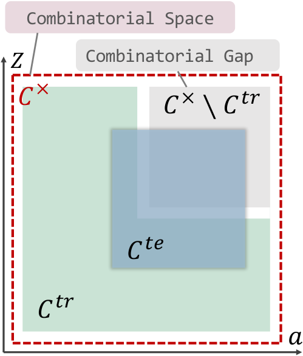
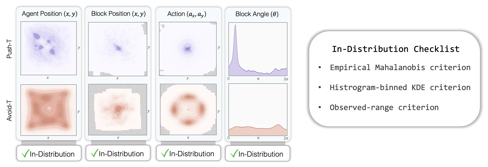
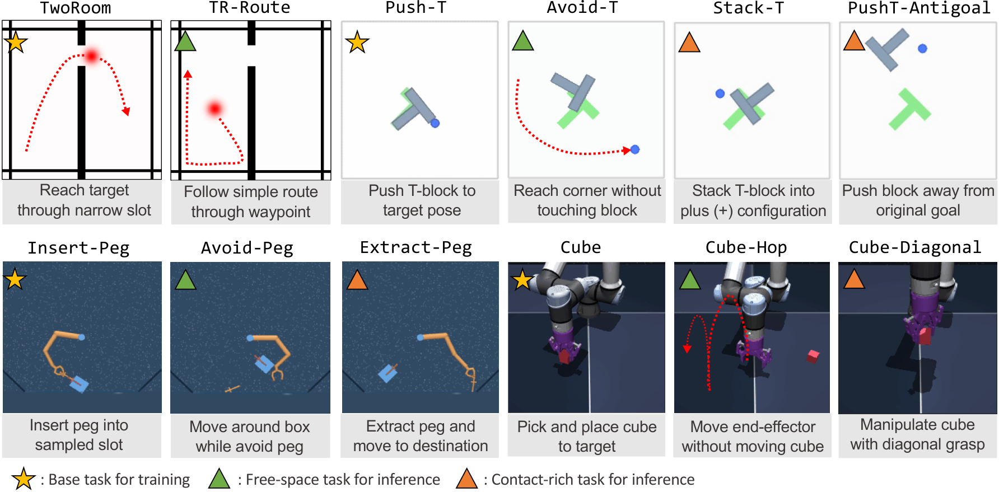
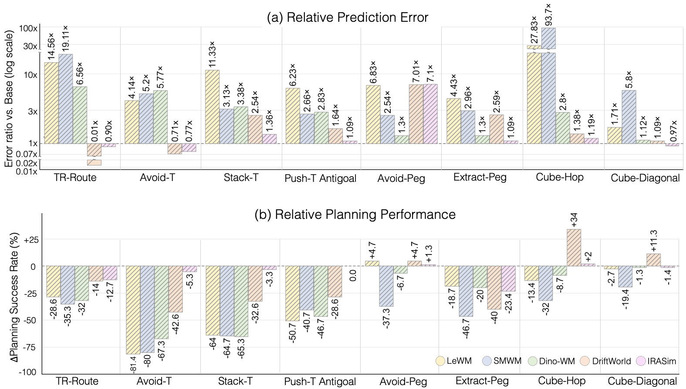
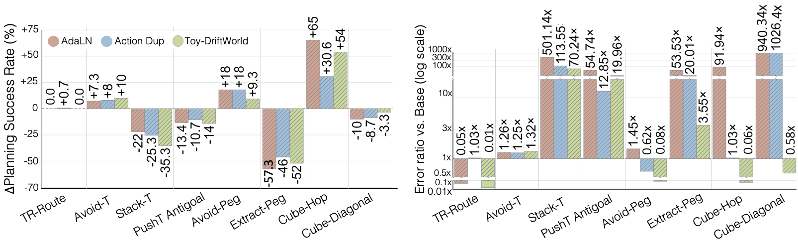

Why AnyGoal?
A world model should be more than a predictor of what an expert usually does. It should model how the environment responds to actions, including actions taken for goals that were not practiced during training.
AnyGoal provides a benchmark to measure this capability, motivated by how human learners generalize from limited experience. We neither introduce a new visual factor to the problem, nor do we change the underlying dynamics of the environment. We only challenge the model's ability to reuse its knowledge compositionally from the training data.
What do we have in AnyGoal?
- Goal variants for Push-T, TwoRoom, OGBench Cube, and DMC Manipulator.
- Unified evaluation of JEPA and Generative-World-Models. (LeWM, Sensorimotor-WM, DINO-WM, DriftWorld, and IRASim)
- Oracle states for every goal, so researchers can study dynamics without having to solve visual abstraction first.
- A documented library for AnyGoal episode collection, training, and evaluation across models (5 end-to-end world models and 3 oracle-state predictors)
The problem: learning the world or the goal?
Expert demonstrations are shaped by a goal. A robot trained to push a block toward a target, for example, usually approaches the block. A model can learn that behavioral regularity without learning the result of an arbitrary action.
Change the goal from pushing the block to avoiding it, and the environment and action space remain the same. The model must now handle state–action combinations that expert rollouts rarely visited. In Push-T, models that plan successfully for the original goal degrade sharply on Avoid-T.

Why does it happen? It is because the model is easily learning shortcut solutions that work for the original goal but fail when the goal changes. As we mentioned earlier, the agent is usually approaching the block in Push-T. Our hypothesis was that if we give an action that moves the agent away from the block when they are far away (which means strongly deviating from the expert trajectory), the model will ignore it and still predict that the agent will approach the block. We tested this hypothesis by performing an action-sensitivity analysis, which confirmed that the model is indeed ignoring actions that deviate from the expert trajectory.

Figure above shows that if the agent is far from the block, the model is way less sensitive to the action. This is observed across different scenarios. More details can be found in the paper.
Similar patterns of action ignoring are observed in la-le-worldmodel.Compositional Generalization: Familiar components, unseen combinations
A central question in AnyGoal is whether world models can generalize to new goals while preserving the same visual factors and underlying physical rules. This directly tests their ability to compositionally generalize across the states and actions that vary within the training dataset.

Compositional generalization is the ability to predict novel combinations of familiar components. In the figure, the combinatorial space contains all combinations of individually observed factors, while the training data cover only a subset of them. AnyGoal targets the combinatorial gap, where test combinations are unseen during training even though each factor remains within its training support.

To ensure that test tasks introduce no unseen state factors or actions, we apply three support criteria using oracle states available in simulation. A factor is considered in-distribution only if it passes all three checks.
The AnyGoal benchmark
World models train only on the original base tasks. Eight goal-shifted variants are reserved for evaluation.
| Base environment | Training goal | Unseen goals |
|---|---|---|
| TwoRoom | Navigate through a narrow passage | TR-Route |
| Push-T | Push a T-shaped block to a target pose | Avoid-T, Stack-T, Push-T Antigoal |
| Manipulator Insert-Peg | Insert a peg into a target slot | Avoid-Peg, Extract-Peg |
| OGBench Cube | Pick and place a cube | Cube-Hop, Cube-Diagonal |
Each precollected benchmark provides 400 evaluation episodes. We also provide a data collection tool with anygoal library, allowing researchers to collect more data for their own experiments.

Evaluating under goal shifts
We compare JEPA-style and generative world models with predictors that receive oracle physical states. Each model is evaluated on its base task and the corresponding AnyGoal variants.
Rollout prediction
How accurately does the model predict future transitions under supplied actions?
MPC planning
Can the model support action selection that reaches the new goal?
These measures are complementary: low prediction error and successful planning do not always move together.
What the results show
Straight to the point, the models are not robust to goal shifts, i.e., they are not doing compositional generalization well.

From the figure above, we can see that the end-to-end models tend to exhibit larger prediction MSE errors and lower planning performance under goal shifts.
However, evaluating end-to-end models still cannot answer where the failures originate. This motivates us to investigate whether the predictor itself (i.e., dynamics learner) is failing even when the oracle states are available.

From the figure above, we can see that the toy model exhibits somewhat different behavior under goal shifts, especially in terms of interaction patterns. Free-space tasks like Avoid-T, Avoid-Peg, and Cube-Hop tends to perform better (often better than the base task), implying that combining learned dynamics within combinatorial gap is pretty easy in these cases. However, in contact-rich tasks like Stack-T, Extract-Peg, and Cube-Diagonal, the toy model exhibits larger prediction MSE errors and lower planning performance under goal shifts. Furthermore, based on the fact that these discrepancies are not observed in the end-to-end models, we can conclude that the failures in end-to-end models are also coming from representation learning as well as the dynamics learning.
We have more explanation about the findings in our paper.
Toward World Models That Generalize Compositionally
Our experiments show that even with access to the true physical state, world models struggle with unseen goals, especially in contact-rich environments. What would it take to build world models that generalize more reliably?
We identify two key challenges.
1. Learning reusable mechanisms. Accurately predicting training trajectories does not guarantee that a model has learned how actions affect the world. Identifying reusable dynamics becomes especially difficult when action effects depend on physical configurations and interaction regimes, such as contact or grasping.
2. Generalizing to unseen combinations. Even correctly learned mechanisms may behave unpredictably on novel state–action combinations. Successful generalization therefore requires additional structure, particularly when physical interactions are involved.
One promising direction is to exploit sparse local mechanisms. One favorable case arises when each physical factor depends on only a small subset of the state and action variables within a given interaction regime. This means a test configuration can be globally unseen but locally familiar.
The key insight is that a world model does not need to observe every possible global configuration if it can correctly learn and reuse the local mechanisms that govern each factor. This provides one possible sufficient condition for compositional generalization, rather than a complete solution. Identifying those mechanisms and handling genuinely new interactions remain open challenges.